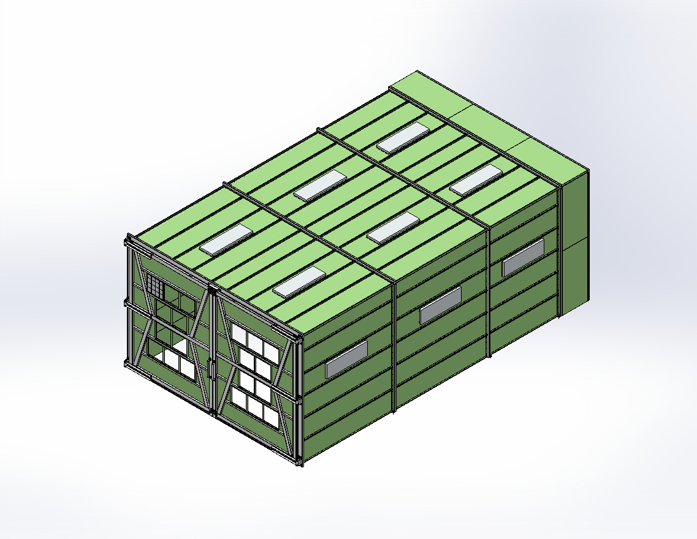

MECHANICAL DESIGN
Industrial Crossdraft Spray Booth
Large industrial equipment design integrating sheet metal, weldments, filtration and manufacturing documentation within tight installation-space constraints.
SolidWorksSheet MetalWeldmentsDFM
View case study